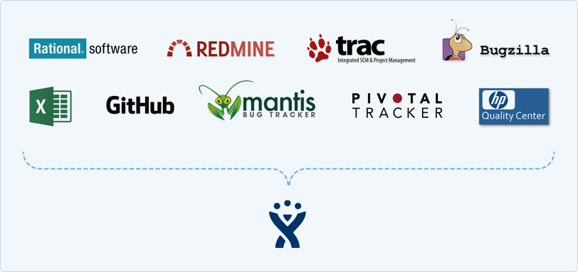

Universidad Nacional Experimental Del Táchira
Decanato De Docencia
Dpto. Ingeniería Informática
Herramientas de apoyo al
desarrollo de software
Conocimientos previos
- Conocimientos básicos de programación.
- Conocer el proceso de desarrollo de software.
Objetivo de la clase
- Aprender a dividir el desarrollo de un proyecto en tareas menores.
-
Conocer el uso de un Issue Tracking System (seguimiento
de incidencias).
- Conceptos básicos.
- Vida de un issue.
- El proceso de cierre de un issue.
- Manejo de Wikis para la documentación.
Introducción
Las metodologías ágiles, se basan en la premisa que el desarrollo de software es un dominio complejo, sin orden a diferencia de otros sistemas de producción como la de automóviles. Understanding Software Agility (2011).
Introducción
διαίρει καὶ βασίλευε (Griego)
Divide et impera (Latín)
Divide y vencerás (Español)
Introducción
- Las soluciones informáticas son sistemáticas y suelen estar compuestas de muchos elementos, que al observarlos desde el punto de vista general pueden abrumar, intimidar o es díficil englobar su totalidad.
- La gerencia de proyectos (project management) ayuda en esta tarea, al separar el proyecto en tareas de distintos niveles hasta facilitar su compresión.
- Comprender bien la solución, permite obtener mayor calidad, eficiencia, efectividad, menores costos y tiempo de desarrollo.
Introducción
- La gerencia de proyectos es una disciplina muy amplia como para estudiarla en esta materia.
- Nos enfocaremos en el manejo de actividades desde un punto de vista muy superficial e informático.
Conceptos básicos
Versión de un software
- Es la identificación mediante un número o un nombre, un determinado estado de una aplicación.
- Generalmente se usa una notación de 2 números separados por punto, el primero indica cambios mayores y el segundo menores.
Conceptos básicos
Componente
- Son los elementos que conforman un software y pueden ser implementados independientemente sin modificaciones en otros proyectos.
- Algunos componentes son: servidor de base de datos, servidor web, backend, frontend, archivos de configuración, sistemas externos (control de versiones), entre otros.
Conceptos básicos
Milestone (Hito o Meta)
- Es un evento que recibe gran atención. Suele indicar la culminación de una fase o un conjunto de actividades.
- Indican la cantidad de trabajo realizado.
- Están compuesta por fechas de inicio y culminación.
- Pueden tener dependencias de otros milestones.
- Permiten a los project managers observar el avance del proyecto.
Conceptos básicos
Actividad
- Son las tareas necesarias para cumplir un fin.
- Las tareas deben realizarse en un orden.
- Pueden ser dependientes de otras actividads y posee un orden.
- Una actividad debe ser lo suficientemente sencilla para ser comprendidad por cualquier miembro del proyecto.
Conceptos básicos
Issues
- Es una unidad de trabajo para lograr una "mejora" en el sistema.
- Representa una actividad cuando se esta desarrollando el software.
- También puede ser la corrección de un bug, crear una nueva funcionalidad, documentación faltante, etc.
- No debe confundirse con el término "problema" del inglés.
- Suelen estar relacionados a un componente.
- Poseen niveles de prioridad.
Conceptos básicos
Estados de Issues
- Depende de la implementación y de la metodología usada por la organización.
-
Los estados suelen ser:
- Abierto
- Verificado
- Propuesta
- En espera
- Re-abierto-abierto
- Finalizado
- Cerrado
Issue/Bug Tracker Systems
- Es un paquete que permite administrar una lista de issues, milestones, etc.
- Algunos son públicos para permitir reportes de sus usuarios.
- Suelen estar integrados con herramientas de control de versioens.
- Permiten llevar el control de desarrollo de software, solución a problemas, avances del proyecto, predecir tiempo de desarrollo.
- Sirve como sustento e historial del trabajo realizado.
Issue/Bug Tracker Systems mas utilizados
Gitlab, Redmine, Bugzilla, Jira, Mantis, Rational...